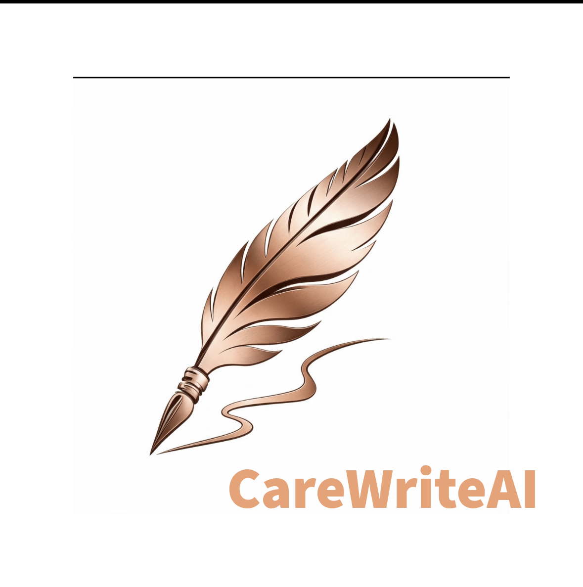

CareWrite AI is built exclusively for UK adult social care. It turns rough notes, voice input, and quick observations into professional, inspection-ready records in seconds — so your team spends less time on paperwork and more time delivering person-centred care.
Carers can spend 2–4 hours every shift writing notes. Handover is often rushed, records can be inconsistent, and important details may be missed. When paperwork slips, it can lead to compliance gaps, CQC concerns, and unnecessary staff burnout.
CareWrite AI helps teams create clearer, more consistent care records in less time. Every draft is written in positive, strengths-based language, helping you capture what matters most about the person receiving care.
It supports quick assessments, incident reports, daily notes, and handover records — all written in a way that is clear, respectful, and ready for inspection.
CareWrite AI is designed to help care teams work more efficiently without compromising on quality. If you’re interested in becoming an early pilot tester, contact us to find out more.